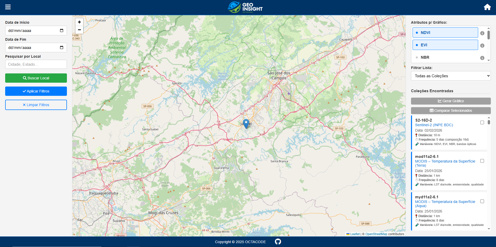

Portfólio

Acadêmico
Scrum Academy
Site educativo sobre framework Scrum que possui metodologia agil, em formato de curso.
Desenvolvido no 1º semestre.

Acadêmico
Turi
A Turi é um site de monitoramento de calor que apresenta um mapa com pontos
indicando regiões com altas temperaturas.
Esses pontos podem representar áreas com possíveis queimadas e condições de seca.

Acadêmico
GeoInsight
O GeoInsight é um site desenvolvido no 3º semestre em parceria com o INPE,
que utiliza dados da API
do instituto para exibir informações de acordo com a região selecionada.
A aplicação apresenta esses dados de forma organizada, incluindo gráficos para melhor visualização.